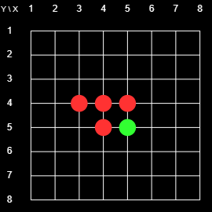
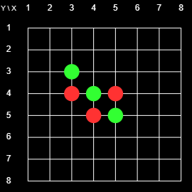

3D Reversi Rules and User's Guide
If you are up to it, or you feel adventurous, you can click right here and start playing Reversi right away. Otherwise, read the information here and then proceed to the actual game page.
The Rules of the Game
The game of Reversi (also known as Othello) is usually played on an 8x8 2D Board, as shown in Figure 1. The novel feature of this online version is that you can play it in 3D. But the easiest way to understand the rules is to start with the 2D rules. The transfer of those rules to the 3D case will be straightforward.
  |
| Fig. 1: Initial Board |
The game is played by two players, usually denoted as Black and White. However, when I first played Reversi many years ago the players were Red and Green and I have used that color scheme on this site. The players have a supply of markers (or pieces) that are red on one side and green on the other. Thus the markers can be reversed (or turned or flipped) and switch color.
Figure 1 shows the initial state of the 8x8 2D Board. There is a grid with 8x8 = 64 intersections. At the start of the game there are red markers on 4-5 (horizontal-vertical) and 5-4, and green markers on 4-4 and 5-5. The players take flips placing markers on the board. Their goal is to enclose contiguous chains of the opponents pieces between two pieces of their own. If they can do that the pieces in the enclosed chain change colors. The player with the most pieces at the end wins. For example, at the beginning, Red could play on 4-3 or 3-4 and flip 4-4, or play on 6-5 or 5-6 and flip 5-5.
The following four boards illustrate a possible sequence of the first four moves. The picture shows the status of the board after the indicated move.
 |
| Red places on 3-4 and flips 4-4 |
|
|
 |
| Green places on 3-3 and flips 4-4 |
|
|
 |
| Red places on 4-3 and flips 4-4 |
|
|
 |
| Green places on 5-3 and flips 4-3 and 5-4 |
|
|
Here is a list of specific rules:
- Starting with Red, the players take turns placing their pieces. The player whose turn it is is the current player, the other player is the opponent.
- Any stone placed by the current player must flip at least one of the opponent's pieces.
- The current player must play a legal placement if possible. If no legal placement is available the current player forfeits the turn, and the opponent becomes the current player.
- After each placement all of the opponent's
pieces contained in enclosed chains must be flipped.
- The game ends when neither player can make a legal move. The player with more pieces wins.
- The game is a draw if both players have the same number of pieces at the end of the game.
To illustrate some aspects of the game, note the following:
- once a piece is placed it may change color but it never moves, and it never gets removed from the board.
- Neither player may skip a valid move, or choose not to flip some of the opponent's enclosed pieces.
- As the game proceeds the number of red and green pieces undergo large swings back and forth. This gives an advantage to the last player. Any, potentially large, gain on the last turn cannot be undone by the opponent.
- Since a player may not have have a legal placement, and thereby forfeit that turn, the opponent effectively is able to place more than one piece at a time, which of course is a great advantage.
Corners are very special. Once a player places piece in a corner it will never change color there. Much of the game strategy consists of gaining corners, and preventing the opponents from gaining corners. Similar considerations apply to edges.
- Usually a game consists of 60 (64 board points - the four points occupied from the beginning. But since a player may have to forfeit a turn it may take longer, and it may also end early with empty spots left on the board, but no legal placements being available for either player. For example, if it was Green's turn in the last board of the above sequence, Green could play 3-5. As a result, all pieces would turn green, neither player would have a legal move available, and the game would end with nine green pieces, and zero red pieces.
The 3D Game
The 3D game is played exactly like the 2D game, except that now there are more neighbors for each point, and the chains of enclosed pieces can run in more directions. In fact, the number of directions increases from 8 to 26 neighbors. To see this note that an interior point and its neighbors in the grid form a 3x3x3 cube which contains 27 points. The innermost point is not a neighbor of itself, so that point has a total of 33-1=27-1 = 26 neighbors, each corresponding to a potential chain of enclosed opposing pieces. (On the 2x2 board we have 32-1 = 8 neighbors, and in n dimensions we have 3n-1 neighbors. You can place pieces in a three dimensional array by using the interactive 3D display or in a two-dimensional cross section of the board.
User's Guide
You can run the game